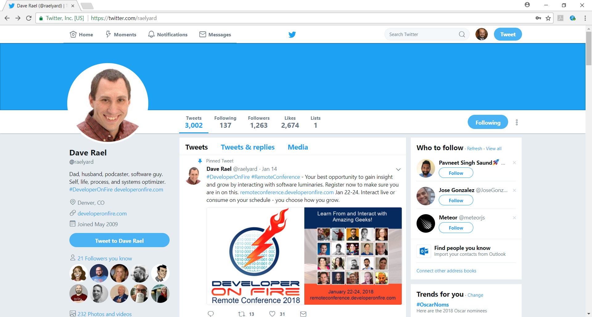

ASSIGNMENT GUIDELINES
Create a new index.html and give it styling similar (not identical) to the Twitter page (posted at bottom of this page) without using the Twitter logo or trademark.
- Have a color banner or picture at the top of the page.
- Enclose a picture in a circle.
- Have your links/menu at the top of the page.
- Select a non-white color for your background, but make it attractive and professional.
- The body will be composed of 3 columns, each having a background color different than the color in the previous step.
- All boxes will have rounded corners, sufficient padding.
- Have an opaque image hovering over a portion of the text.
- Use your imagination to add additional styling to your page to better represent you.
- Create an external style sheet using all 4 different types of selectors: Universal, Type Class, ID.
MY SOLUTION
Below I go through what I did to meet each requirement for this assignment.
- As you can see I have a blue color banner at the top of the page, I like using the color blue in a stuff I design that reflects me such as my resume of personal website, I would say that using the color blue is part of my "personal brand".
- As you can see there is a photo of me in a circle at the top of this page I had it carry over the blue and white columns similar to the way twitter does their photos.
- I have links at the top of the page in a nav bar, they look and act like links but they will not actually take you anywhere if you click on them because the href for all of them is simply set to just "#", the reason I did this is because I am going to post this project to my website and I saw no reason to bog it down with a bunch of content that is already on my website.
- I used a very light blue color for my background color, as you know I like to use the color blue.
- I have 3 body columns, however they are responsive so if you are viewing this on a phone or tablet they will just be stacked and not render as columns, but if you view this on a desktop there will be three columns.
- All 3 boxes have padding set to 1% and have a border radius of 15px.
- At the bottom of the page I post the sample page, set its opacity to 0.5 and placed it over text stating what the photo's purpose was.
- I added lots of styling to the page, you can find the CSS file on my github, the repo is titled HW3.
- While finding a use for the universal selector was slighting challenging I did use all 4 selectors, once again you can find the CSS file for this homework on my GitHub.
FINAL THOUGHTS
I think that not only did I meet all the requirements for this homework but I made it very creative as well. I do have a design background so I want every front end web project of mine to look good and be creative. Additionally, the verbiage that I used will allow someone to look at this project and understand my thoughts as well as the project details. I used everything that we learned in class to make this site as well as a few additional concepts. One challenge that took me forever to figure out was how to make my columns stack at a certain point while using a liquid layout. My solution to this was to use a queries.css file to override my original layout once a screen size got to a certain point. I learned a lot from this project. CSS can really be a pain if you don't work with it often, but over the past week I have really improved my CSS skills.

THIS IS THE IMAGE THIS PROJECT IS BASED OFF OF